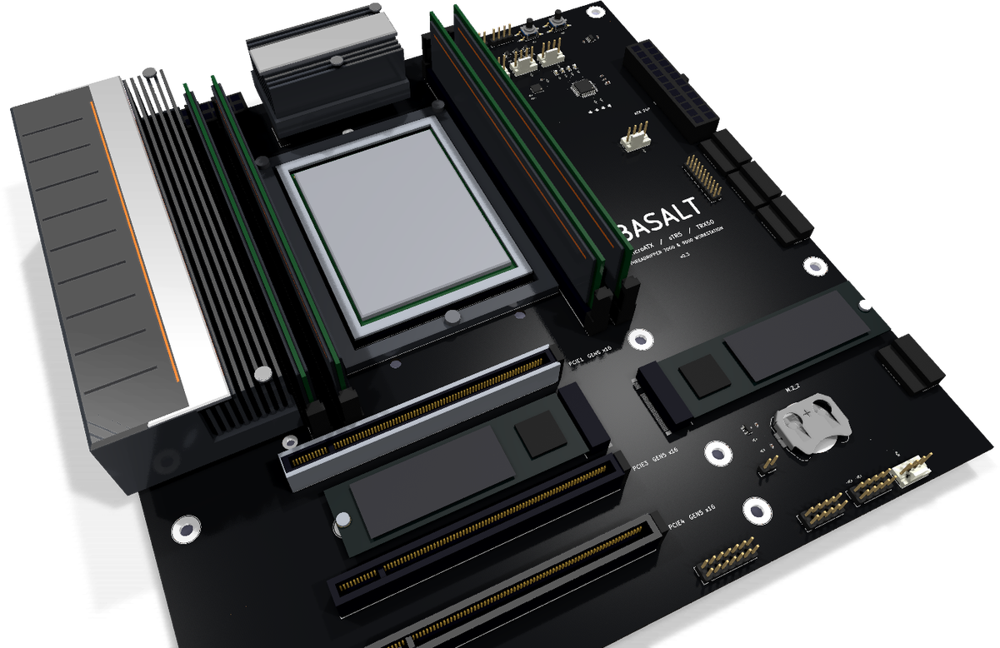
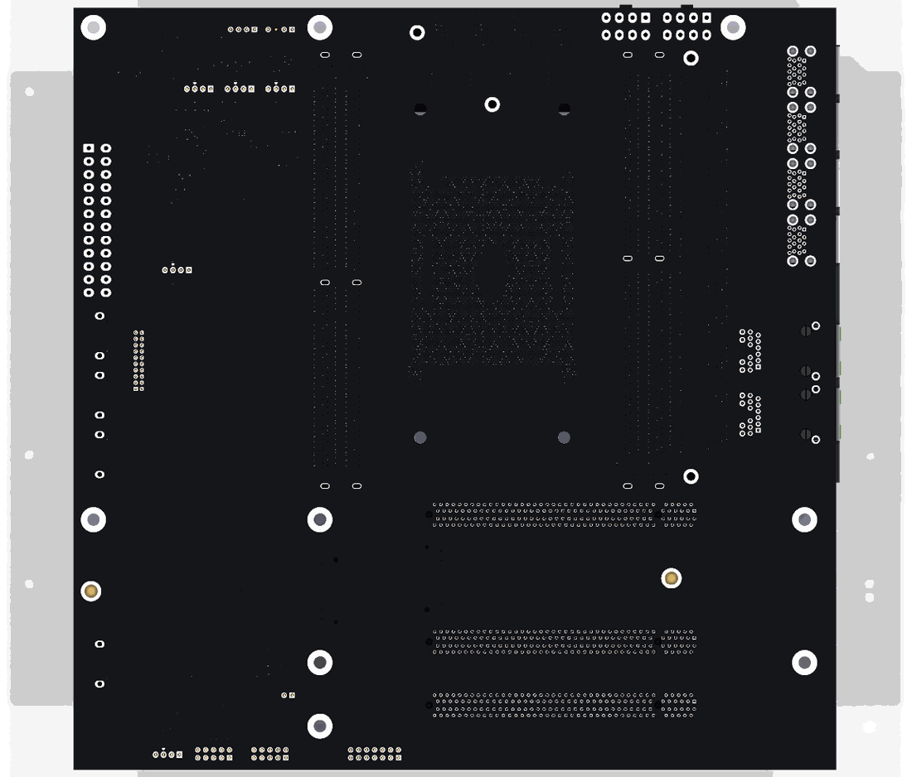

Blog ·
Basalt: fitting a Threadripper onto a microATX board
- examples
- basalt
- ddr5
- power delivery
- escape routing
Basalt is a motherboard for AMD's Threadripper 7000 and 9000 processors, on a microATX board 244 mm square. Every board made for this platform, TRX50, is ATX or larger, and we asked for a smaller one. An AI agent designed it with Via, our tools and checks for building KiCad boards. We wrote the brief and read the agent's work, its checks and its mistakes.

Why the outline comes first
A computer case sets a motherboard's shape before any circuit does. A microATX board measures 244 by 244 mm and must meet the case's posts, port window and slot openings. Intel's ATX Specification, version 2.2, draws the holes and the port window. PCI-SIG's PCI Express Card Electromechanical Specification, revision 4.0, draws where each slot's connector sits.
The agent took every position those drawings give, down to nine mounting holes of 3.96 mm. The slot center lines sit 20.32 mm apart: 0.8 inch, the pitch of the case's openings. Inside sit the socket, three PCI Express x16 slots and four DDR5 memory slots, two each side. Two M.2 sockets take solid-state drives.
Getting 4844 contacts out from under one chip
The processor's package measures 58.5 by 75.4 mm, about the area of a credit card. Its underside carries 4844 contacts, called lands, 0.94 mm apart along a row and 0.81 mm between rows. Each signal land needs a trace that leaves the grid through the gaps between rows. Engineers call this escape routing.
Picture a theater whose aisles between rows fit one person each. The person in the end seat takes the aisle; the person beside needs another floor. On a board, each floor is a copper layer, and a via, a plated hole, joins the layers.
On Basalt, each gap carries one trace on each layer. The outer column leaves on the top layer; the next drops through a via to the next signal layer. The memory bands are four signal columns deep, so the memory needs four routing layers. With room for the PCI Express escape and four planes of ground and power, Basalt has 10 copper layers.

Memory buses and the race inside a byte
Each of Basalt's four DDR5 channels carries 144 traces: data, strobes, check bits, commands, addresses and clocks. The data moves in byte lanes of eight lines, each with a strobe beside it. A strobe is a timing signal sent with the data; the receiver uses its edges to time each read. JEDEC's DDR5 standard, JESD79-5 (2020), defines this scheme.
A signal in a buried trace on this board travels about 141 mm per nanosecond. That is the speed of light over the square root of 4.5, the board's dielectric constant. That constant says how much the glass and epoxy around a trace slow its signal. Howard Johnson and Martin Graham work this out in High-Speed Digital Design (Prentice Hall, 1993).
At 4800 million transfers a second, one of DDR5's standard rates, a bit lasts about 208 picoseconds. In such a trace, 12.3 mm of extra length delays a bit by about 87 picoseconds. That is more than 40% of the bit. Designers match the lengths inside each byte lane for this reason, and Basalt's are not matched yet. Inside a byte lane, the spread is 0.5 mm at the median and 12.3 mm at the worst.
The agent drew all 576 traces with four rules in buses.py, and gave none to a router. On each layer, 72 lands and 72 slot pins pair up in order, so no two traces cross. The first design-rule check on them, which measures every gap and connection, found no errors.
The traces on In2 and In3 run between the ground planes In1 and In4, a shape called stripline. Its impedance, the ratio of voltage to current a wave sees, depends on trace width and plane spacing. The files set no impedance for Basalt's 0.1 mm memory traces yet.
Hundreds of amps at about 1 V
Power is voltage times current, so a 350 W processor near 1.1 V draws near 320 A. The power arrives at 12 V, through two EPS 8-pin connectors. A buck converter steps it down by switching the 12 V on for about 9% of each cycle. A coil, called a choke, and capacitors average the pulses to about 1.1 V. Robert Erickson and Dragan Maksimović derive this in Fundamentals of Power Electronics (Springer, 3rd edition, 2020).
Designers split that much current across several converters in parallel, called phases. Basalt has 14, each a Texas Instruments CSD95490Q5MC power stage rated 75 A and a 150 nH choke. The core supply, VDDCR_CPU, takes 12; the other two feed the SoC, the chip's parts outside the cores. A controller staggers the phases in time, so their ripple currents partly cancel. That controller is not on the board yet. AMD shares the processor's regulator interface only under a nondisclosure agreement, an NDA.
The current reaches the socket through copper planes. A square of copper foil has the same resistance edge to edge at any size. A bigger square is wider, which helps, and longer, which hurts, by the same amount. Eric Bogatin explains this sheet resistance in Signal and Power Integrity, Simplified (Prentice Hall, 3rd edition, 2018). One square of copper 15 µm thick measures about 1.1 milliohm. At 320 A, that drops more than a third of a volt.
Basalt carries VDDCR_CPU to the socket on one plane, In5, of 15 µm copper. A second plane in parallel would halve the drop, and copper twice as thick would halve it again. None of the gates that passed measures this drop, and no check of it has run yet.
How the design went
The agent built Basalt in a loop: one prompt, run again and again on the same files. LOOP.md logs all 12 passes.
In v0.1, the agent gave the four supply nets to FreeRouting, an automatic router. It ran 20 minutes without finishing a pass, twice. The agent then drew the supplies itself: three pours and one track, as a motherboard carries them. The next check found nothing unconnected, and the agent logged the slip as M150 in the list of mistakes.
The design-rule check found each phase's switch node shorted to ground. Its 2.0 mm track began at the center of a 0.8 mm pad and reached the ground pad. The tracks now start at the pad's outer edge.
Midway, we asked for "basically a bunch of ports that all modern motherboards have". Version 0.3 added 77 parts, from SATA ports and five fan headers to the CMOS battery. FreeRouting finished their 51 nets in 0.3 s with none routed. The agent extended the project's own grid router to change layers through a via. The router then joined all 51.
Each version passed Via's gates with no warning. On v0.3 that means no electrical or design-rule errors, nothing unconnected and 30 Gerber files for the fab. The simulation gate had nothing to run: the board has no circuit with a test deck yet. Basalt's page shows every track.
What is not done
No one has ordered or built a Basalt. The PCI Express and M.2 lanes are not drawn; on a scratch copy, 151 of the 234 routed. The processor's land map is a stand-in, because AMD keeps its own under NDA. The socket's housing, frame and cooler holes are estimates. The regulator's controller, the rear ports' controllers and the board controller's firmware are not done. The v0.3 README lists every open item.
Next, we want the agent to draw the PCI Express and M.2 lanes by rule, like the memory. After that we intend to add the regulator's controller, which brings the board's first simulation deck.